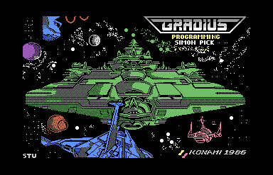
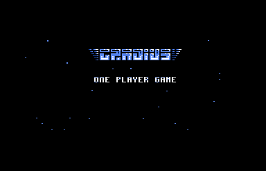

<meta charset="utf-8">
<meta name="viewport" content="width=device-width, initial-scale=1">
<title>Gradius</title>
<link rel="preconnect" href="https://fonts.googleapis.com">
<link rel="stylesheet" href="https://fonts.googleapis.com/css2?family=Lato:wght@400;700;900&family=IBM+Plex+Mono:wght@400;500&display=swap">
<style>
:root{
  --bg:#23262d; --paper:#e9e7e1; --surface:#ffffff; --surface-2:#f1efea; --line:#d5d3cc; --line-soft:#e0ded8;
  --ink:#2f3136; --ink-soft:#55585f; --ink-mute:#80838a;
  --link:#1f5fa8; --link-hover:#154480; --accent:#1f5fa8;
  --amber:#c25a00; --cyan:#1f5fa8; --coral:#d04a3a; --green:#2a8a4a; --violet:#4a5bd6; --hl:#fff0c2;
  --chip:#2f3136; --chip-ink:#ffffff;
  --c64blue:#40318d; --c64grey:#686868;
  --fd:'Lato',system-ui,sans-serif; --fb:'Lato',system-ui,sans-serif; --fm:'IBM Plex Mono',ui-monospace,Menlo,monospace;
  --col:1080px; --gx:68px; --fs:17px; --lh:1.6; --hw:900; --h1:46px; --h2:26px; --sy:48px; --pp:26px; --r:10px;
  --plate-shadow:0 1px 2px rgba(0,0,0,.05),0 4px 14px rgba(0,0,0,.05);
}
*{box-sizing:border-box}
html{background:var(--bg);min-height:100%}
body{background:var(--paper);color:var(--ink);font-family:var(--fb);font-size:var(--fs);line-height:var(--lh);max-width:var(--col);margin:0 auto;min-height:100vh;padding:0 0 4rem}
h1,h2,h3{font-weight:var(--hw);letter-spacing:-.01em;text-wrap:balance;color:var(--ink);margin:0}
.wrap{padding:0 var(--gx)}
.hero{padding:48px var(--gx) 8px;text-align:left}
.eyebrow{font-family:var(--fm);font-size:12px;letter-spacing:.08em;text-transform:uppercase;color:var(--ink-mute);margin:0 0 10px}
.hero h1{font-size:var(--h1);line-height:1.15;letter-spacing:-.02em;margin:0 0 14px}
.hero .sub{margin:0 0 .6em;color:var(--ink-soft)}
section{padding:var(--sy) 0 24px}
section:last-of-type{border-bottom:none}
.fig{font-family:var(--fm);font-size:12px;letter-spacing:.08em;text-transform:uppercase;color:var(--ink-mute);margin:0 0 10px}
h2.t{font-size:var(--h2);margin-bottom:12px}
.lede{color:var(--ink-soft);margin:0 0 30px}
.plate{background:var(--surface);border:1px solid var(--line);border-radius:var(--r);padding:var(--pp);box-shadow:var(--plate-shadow)}
.cap{font-size:14px;color:var(--ink-mute);margin-top:14px;line-height:1.55}
.cap b{color:var(--ink);font-weight:700}
code{font-family:var(--fm);font-size:.82em;background:var(--chip);color:var(--chip-ink);border-radius:4px;padding:2px 6px;white-space:nowrap}
.gr-two{display:grid;grid-template-columns:1fr 1fr;gap:16px}
.gr-two img{width:100%;image-rendering:pixelated;border-radius:6px;display:block}
.gr-cv{width:100%;image-rendering:pixelated;display:block;background:#000;border-radius:6px}
.gr-bar{display:flex;flex-wrap:wrap;gap:8px;align-items:center;margin:0 0 12px;font-family:var(--fm);font-size:13px}
.gr-btn{font:inherit;font-family:var(--fm);font-size:13px;background:var(--surface-2);border:1px solid var(--line);border-radius:6px;padding:5px 10px;cursor:pointer;color:var(--ink)}
.gr-btn[aria-pressed="true"]{background:var(--ink);color:#fff;border-color:var(--ink)}
.gr-range{flex:1;min-width:160px}
.gr-out{font-family:var(--fm);font-size:13px;color:var(--ink-soft);margin-top:10px;min-height:1.5em}
.gr-tbl{border-collapse:collapse;width:100%;font-size:14px}
.gr-tbl th,.gr-tbl td{border-bottom:1px solid var(--line-soft);padding:6px 8px;text-align:left;vertical-align:top}
.gr-tbl th{font-family:var(--fm);font-size:12px;letter-spacing:.04em;text-transform:uppercase;color:var(--ink-mute);font-weight:500}
.gr-tbl td.n{font-family:var(--fm);text-align:right;white-space:nowrap}
.gr-scroll{overflow-x:auto}
.gr-strip{display:block;image-rendering:pixelated;max-width:none}
.gr-gap{margin-top:12px}
@media (max-width:720px){:root{--gx:16px;--h1:34px}.gr-two{grid-template-columns:1fr}}
.gr-three{display:grid;grid-template-columns:1fr 1fr 1fr;gap:12px}
.gr-three img{width:100%;image-rendering:pixelated;border-radius:6px;display:block}
.gr-split{display:grid;grid-template-columns:1fr 1fr;gap:16px;align-items:start}
@media (max-width:720px){.gr-three,.gr-split{grid-template-columns:1fr}}
.gr-shot{width:100%;max-width:640px;image-rendering:pixelated;border-radius:6px;display:block}
</style>
<!-- tabs -->
<header class="hero">
  <p class="eyebrow">1987 · Konami</p>
  <h1>Gradius</h1>
  <p class="sub">Konami's shooter on the Commodore 64 keeps all eight stages in memory at once, carries a music player with two tunes that never play, and times its screen splits for an American machine, so a European one draws the picture wrong.</p>
</header>
<main class="wrap">

<section id="game">
  <p class="fig">01 · The game</p>
  <h2 class="t">A ship, a power-up bar and eight stages</h2>
  <p class="lede">You fly the Vic Viper from left to right through eight stages. The screen scrolls on its own, and each stage ends in a boss.</p>
  <div class="plate">
    <div class="gr-three"></div>
    <p class="cap">The loading screen, the title and stage 1, in VICE. The loading screen credits the programming to Simon Pick and dates the game KONAMI 1986. The title and the stage are from an NTSC C64, where the screen splits land where the game expects them (<a href="#splits">section 04</a>).</p>
  </div>
  <p>Shooting a red enemy, or the last of a group, leaves a capsule. Each capsule you pick up moves a light along the power-up bar at the bottom of the screen: SPEEDUP, MISSILE, DOUBLE, LASER, MULTI and ?. Right SHIFT takes the power-up that is lit, and the light goes out. MULTI gives an Option, a copy of the ship that fires with it, and ? gives a shield.</p>
  <p>When a stage's scenery runs out, the scroll stops and the stage's own attack begins: rocks from volcanoes, darts, bursting blocks, a block to shoot through, and then a boss, most often the Big Core. One to four players take turns, each with three lives, and a lost life past the stage's checkpoint starts again from there (<a href="levels.html">Levels</a>).</p>
</section>

<section id="music">
  <p class="fig">02 · Music</p>
  <h2 class="t">Music: two tunes the game never plays</h2>
  <p class="lede">The game carries a two-voice music player and two tunes for it. Nothing in the game calls the player, so the tunes have never been heard in play.</p>
  <div class="plate">
    <div id="gr-sid"></div>
    <p class="cap">The game's own tune player running on the page, over the bytes in the listing: <code>set_tune</code> (<code>$1C5B</code>) to start, as the stage's events do, then <code>tune_tick</code> (<code>$1AB5</code>) once a frame, as <code>music_tick</code> (<code>$6AA9</code>) would call it. <code>test_music.js</code> runs the game's <code>music_tick</code> on the kit's 6502 beside the page and holds every register write of 3,000 frames of each tune to it. The clock is an NTSC C64's.</p>
  </div>
  <p>Each tune is two lists of notes, one for each voice, two bytes a note: the note and its length. Three more bytes are commands: <code>$FE</code> loads one of 15 instruments, <code>$FD</code> jumps to the tune's second section and <code>$FF</code> starts both voices again. Tune 1 steps every six frames and is played an octave up; tune 2 steps every four frames (<code>tune_tempo</code>, <code>tune_transpose</code>).</p>
  <p>The stages still start the tunes: event 15 calls <code>set_tune</code> for tune 1 and event 16 for tune 2. But <code>set_tune</code> only clears the chip and points the voices at the notes. The routine that would play a step each frame, <code>music_tick</code>, has no caller, and the M key that would switch the music on is cut off by a single byte (<a href="discoveries.html">Discoveries</a>).</p>
  <p>The player has a small fault of its own. It adds each voice's register offset in the chip, 0 or 7, to the low byte of the note's frequency (<code>$1B4D</code>), so the second voice plays every note a little sharp.</p>
</section>

<section id="effects">
  <p class="fig">03 · Sound effects</p>
  <h2 class="t">Sound: nine effects, eight pitches each</h2>
  <p class="lede">Every sound in the game is one of nine effects, each a waveform, an envelope and eight pitches played round and round.</p>
  <div class="plate">
    <div id="gr-sfx"></div>
    <p class="cap">Each button runs the game's <code>play_effect</code> (<code>$9B71</code>) with the effect's number, then <code>effects_tick</code> (<code>$9BE1</code>) once a frame, as the play frame calls it, until the effect's time runs out. Checked by <code>test_music.js</code> like the tunes.</p>
  </div>
  <p><code>play_effect</code> puts each new effect on the next of the three voices in turn, so three can sound at once and a fourth cuts off the oldest. Each frame <code>effects_tick</code> sets the voice's pitch to the next of the effect's eight steps in <code>effect_pitch</code> and counts down its time from <code>effect_time</code>. The explosions (effects 2, 5 and 6) use noise; the rest use triangle or sawtooth waves.</p>
</section>

<section id="splits">
  <p class="fig">04 · The screen splits</p>
  <h2 class="t">Splits timed for an American machine</h2>
  <p class="lede">Two timer interrupts a frame switch the screen between the playfield and the power-up bar. Their timing fits an NTSC frame exactly and a PAL frame not at all.</p>
  <div class="plate">
    <div class="gr-bar"><button class="gr-btn" id="gr-ntsc" aria-pressed="true">NTSC</button><button class="gr-btn" id="gr-pal" aria-pressed="false">PAL</button><input type="range" class="gr-range" id="gr-frame" min="0" max="49" value="0" aria-label="Frame"><span id="gr-frame-n"></span></div>
    <canvas id="gr-split" class="gr-cv"></canvas>
    <div class="gr-out" id="gr-split-out"></div>
    <p class="cap">The screen's 25 rows of characters, with the lines where each interrupt arrives, worked out from the timer's period (<code>$42C6</code>, 17,095 cycles) and the frame's length. Rows drawn in the playfield's mode are plain; rows drawn in the bar's mode are hatched, labelled B. On VICE's PAL C64, frames 0, 2 and 4 recorded with <code>frame.py</code> had the writes at lines 82 and 242; 1, 161 and 272; and 80, 191 and 226. This model gives the same lines to within one, apart from the write at line 226, which it does not have.</p>
  </div>
  <p>The playfield is drawn in multicolour character mode, where a character has four colours. The power-up bar is drawn in extended colour mode, where a character has a background colour of its own but only 64 shapes. The game switches between the two with two timers on the second CIA chip, which fire non-maskable interrupts (NMIs), handled at <code>nmi_split</code> (<code>$0840</code>). <code>start_split_timers</code> (<code>$FD50</code>) starts timer A at raster line 70 and timer B at line 230, and gives both the same period: 17,095 cycles. The handlers' writes land about twelve lines later, at lines 82 and 242.</p>
  <p>An NTSC C64 draws a frame in 263 lines of 65 cycles, 17,095 cycles: the timers come round at the same lines every frame. A PAL C64 draws a frame in 312 lines of 63 cycles, 19,656 cycles, so each timer comes 2,561 cycles, about 41 lines, earlier in each frame than in the last, and sometimes twice in one frame. The bar's mode creeps up over the playfield, where its 64 shapes turn the scenery into letters and digits. Press PAL and move through the frames.</p>
</section>

<section id="map">
  <p class="fig">05 · The scenery</p>
  <h2 class="t">A map read one column at a time</h2>
  <p class="lede">Each time the screen has scrolled eight pixels, the game shifts the playfield one character left and reads one new column of 19 rows from the stage's map.</p>
  <div class="plate">
    <div class="pick"><a class="step" id="gr-map-prev" aria-label="Previous stage">‹</a><select id="gr-map-stage" aria-label="Stage"></select><a class="step" id="gr-map-next" aria-label="Next stage">›</a></div>
    <div class="gr-bar"><input type="range" class="gr-range" id="gr-map-col" min="0" max="100" value="0" aria-label="Map column"></div>
    <canvas id="gr-map" class="gr-cv"></canvas>
    <div class="gr-out" id="gr-map-out"></div>
    <p class="cap">Forty columns of the stage's scenery from the slider's column on, drawn by the page from the map, the character set and the row colours in the listing; the outlined column is the one the bytes below it make. <code>test_map.js</code> runs the game's own <code>map_column</code> (<code>$4EA9</code>) and <code>map_column_up</code> (<code>$54DF</code>) on every column of every stage and holds the page's reader to them.</p>
  </div>
  <p>A map byte of <code>$7F</code> or more is a character, put in the next row down. A smaller byte is a count of empty rows, filled with spaces. A column ends when its 19 rows are full, and <code>map_ptr</code> moves past the bytes it read, so a column of open sky costs one byte and a column of solid rock costs nineteen. Stage 4's drawer, <code>map_column_up</code>, fills the column from the bottom row up, so stage 1's map comes out upside down, the volcanoes hanging from the ceiling, through a character set whose shapes are drawn upside down to match.</p>
  <p>Characters from <code>$80</code> up to a limit set for each stage (<code>scenery_limit</code>) are solid: the shots, lasers and missiles stop at them and the ship dies on them. The stage's own character set fills characters <code>$80</code> to <code>$FF</code>, copied to <code>$3C00</code> as the stage starts (<code>load_stage_charset</code>). Every stage is drawn whole on the <a href="levels.html">Levels</a> tab.</p>
</section>

<section id="powerups">
  <p class="fig">06 · Power-ups</p>
  <h2 class="t">What each box gives</h2>
  <p class="lede">Right SHIFT takes the lit box. The joystick has no way to take one: the only call to <code>take_powerup</code> is in the keyboard reader.</p>
  <div class="plate">
    <div class="gr-scroll"><table class="gr-tbl">
      <tr><th>Box</th><th>What it gives</th><th>Until</th></tr>
      <tr><td>SPEEDUP</td><td>One more step of speed, across and up and down</td><td>Speed 4</td></tr>
      <tr><td>MISSILE</td><td>Missiles that drop and run along the ground; a second MISSILE makes them move every frame instead of every other</td><td>Two</td></tr>
      <tr><td>DOUBLE</td><td>A second shot that climbs as it goes; takes LASER away</td><td>Once</td></tr>
      <tr><td>LASER</td><td>Lasers in place of shots; takes DOUBLE away</td><td>Once</td></tr>
      <tr><td>MULTI</td><td>An Option, which follows the ship's trail and fires with it</td><td>Two</td></tr>
      <tr><td>?</td><td>A shield worth four hits</td><td>While it lasts</td></tr>
    </table></div>
    <p class="cap">From <code>take_powerup</code> (<code>$5200</code>). A power-up that can go no further has its box blanked, and a blank box does nothing when taken.</p>
  </div>
  <p>A capsule moves the light one box on (<code>capsule_power</code>, <code>$5777</code>) and scores 500. Every seventh capsule dropped is blue instead (<code>drop_capsule</code>, <code>$5630</code>): picking it up destroys every small enemy on the screen and leaves the light where it is (<code>blue_capsule</code>, <code>$5D3D</code>). The fire button shoots every 17 frames while it is held (<code>fire_button</code>, <code>$4DAC</code>). An extra Vic Viper comes every 100,000 points (<code>extra_life</code>, <code>$6B8B</code>).</p>
</section>

<section id="bosses">
  <p class="fig">07 · The bosses</p>
  <h2 class="t">The Big Core and the last boss</h2>
  <p class="lede">Most stages end with the Big Core. Stage 7 ends with a block to shoot through, and stage 8 with a boss drawn dot by dot.</p>
  <div class="plate">
    
    <p class="cap">The Big Core at the end of stage 6, in VICE.</p>
  </div>
  <p>The Big Core is six double-size sprites (shapes <code>$A7</code>-<code>$AC</code>) with five walls across its middle (<code>boss_phase</code>, <code>$7768</code>). A shot that strikes the two middle rows counts toward a wall, and every sixth such hit takes one away (<code>core_shots</code>, <code>$7829</code>); a laser takes one every eighth touch. As each wall goes, <code>core_walls_draw</code> rewrites the rows of two sprite shapes so the gap shows. With all five gone the stage is cleared for 500 points. If the Core's timer runs out first, the stage is cleared without them.</p>
  <p>Stage 7's block takes 40 hits (<code>target_struck</code>, <code>$6A16</code>). The last boss is four double-size sprites whose shapes are cleared and then drawn in from a picture at <code>$9C49</code>, 25 dots a frame, until all 2,048 are in (<code>grow_brain</code>, <code>$9985</code>). It has six layers of 20 hits each (<code>brain_struck</code>, <code>$9A4B</code>). After it, the ending prints YOU HAVE SAVED THE PEOPLE OF NEMESIS over rolling bands of grey for 250 frames (<code>ending</code>, <code>$CE66</code>), and play goes back to stage 1.</p>
</section>
</main>

<footer style="margin:16px 0 0;padding:22px var(--gx) 0;border-top:1px solid #e0ded8;font-family:'IBM Plex Mono',ui-monospace,Menlo,monospace;font-size:12px;color:#80838a"><a href="https://github.com/gamesexplained/gamesexplained" style="color:#1f5fa8;text-decoration:none">GitHub</a> · <a href="https://discord.gg/3V9GWyRDWV" style="color:#1f5fa8;text-decoration:none">Discord</a><br>© Games Explained contributors. Write-ups, facts and symbol maps are available under <a href="https://creativecommons.org/licenses/by-sa/4.0/" style="color:#1f5fa8;text-decoration:none">CC BY-SA 4.0</a>; code under <a href="https://opensource.org/licenses/MIT" style="color:#1f5fa8;text-decoration:none">MIT</a></footer>
<script src="../../lib/c64.js"></script>
<script src="../../lib/sid.js"></script>
<script src="../../lib/cpu6502.js"></script>
<script>
/* gr-music */
// createDriver for C64Sid: runs the game's own tune player and effects player, their code and
// tables taken from the listing over GR_DRIVER_RANGES, on the kit's 6502 (C64Cpu, from
// ../../lib/cpu6502.js, which sid.js passes to createDriver).
// A tune button starts as the game's events start a tune: set_tune ($1C5B) with A = 1 or 2, which
// clears the SID, sets the volume to 15 and points both voices at the tune. Each frame then runs
// tune_tick ($1AB5), the routine music_tick ($6AA9) would call once a frame if anything called it.
// An effect button runs play_effect ($9B71) with the effect's number, as the game does, and each
// frame effects_tick ($9BE1), which the play frame calls at $08F0; it stops when every voice's
// time (voice_time, $9C2F) has run out.
// tune_tick reads a SID register back ($1B61, LDA $D404,Y): the chip answers that with the data
// bus, which holds the last value written to any of its registers, so io.read returns that.
const GR_DRIVER_RANGES = [[0x19D2, 0x1FF9], [0x9B04, 0x9C32]];
const GR_TUNES = [{ name: 'Tune 1 (stage start)', a: 1 }, { name: 'Tune 2 (scenery starts)', a: 2 }];
const GR_EFFECTS = [
  { name: '0 · Capsule collected', e: 0 }, { name: '1 · Power-up taken', e: 1 },
  { name: '2 · Rusher or last boss hit', e: 2 }, { name: '3 · Shot fired', e: 3 },
  { name: '4 · Enemy destroyed', e: 4 }, { name: '5 · Ship or big enemy hit', e: 5 },
  { name: '6 · Rock thrown', e: 6 }, { name: '7 · Shot strikes scenery', e: 7 },
  { name: '8 · Extra life', e: 8 },
];
function createDriver(D, C64Cpu) {
  const base = new Uint8Array(0x10000);
  for (const [ad, bytes] of D.mem) base.set(bytes, ad);
  const sid = new Uint8Array(25);
  let m, cpu, c, writes = [], over = false, bus = 0;
  const io = {
    read(ad) { if (ad >= 0xD400 && ad < 0xD419) return bus; throw new Error('read $' + ad.toString(16)); },
    write(ad, val) {
      if (ad >= 0xD400 && ad < 0xD420) { const r = ad - 0xD400; bus = val; if (r < 25) { sid[r] = val; writes.push(r, val); } return; }
      if (ad >= 0xD420 && ad < 0xD800) { const r = (ad - 0xD400) & 31; bus = val; if (r < 25) { sid[r] = val; writes.push(r, val); } return; }
      throw new Error('write $' + ad.toString(16));
    },
  };
  const run = (ad, regs) => cpu.call(ad, regs || {}, { maxSteps: 200000 });
  return {
    sid,
    get writes() { return writes; },
    init(t) {
      c = D.list[t];
      m = base.slice(); cpu = new C64Cpu.CPU(m, { port: 0x35, io });
      sid.fill(0); over = false; writes = []; bus = 0;
      if (c.a !== undefined) run(0x1C5B, { a: c.a });          // set_tune
      else run(0x9B71, { a: c.e });                              // play_effect
    },
    stop() { over = true; writes = []; },
    play() {
      writes = [];
      if (over) return;
      if (c.a !== undefined) run(0x1AB5);                        // tune_tick
      else {
        run(0x9BE1);                                             // effects_tick
        if (!m[0x9C2F] && !m[0x9C30] && !m[0x9C31]) over = true;
      }
    },
    playing() { return !over; },
    voice(v) {
      if (!m || c.a === undefined || v > 1) return {};
      return { data: '$' + (m[0x1AA4 + v] | m[0x1AA8 + v] << 8).toString(16).toUpperCase(), left: m[0x1AA0 + v] };
    },
  };
}
// end of gr-music

</script>
<script>
/* gr-map */
// The stages' scenery, read from the listing as the game reads it.
// grStage(ram, s): stage s (0-7)'s tables, as load_stage_charset ($78F6), load_stage_block
// ($7964), load_stage_colours ($799F), stage_setup ($5FFB) and event_scenery ($50C4) find them:
// the upper character set (stage_charset_lo/hi, $78E6/$78EE), the event list (stage_block_lo/hi,
// $7954/$795C), the 25 row colours (stage_colours_lo/hi, $798F/$7997), the two shared multicolours
// (stage_colour1, $5FB9, and stage_colour2, $5FC1), the map's start (map_starts, $50B4/$50BC) and
// whether the stage draws it from the bottom up (stage 4, map_column_up).
// grEvents(ram, ev): the event list as run_events ($7307) reads it once it is at $8000: 115 events,
// each a position (low byte at +$000, high at +$073), a type (+$0EC) and a parameter (+$15F).
// grScenery(ram, s): the columns of map the stage scrolls through: from the position of event 16
// (start_tune2, which turns the scenery on through event_scenery) to the next event 12
// (event_attack, which sets boss_mode and stops the scroll), or null when no event turns it on.
// grColumn(ram, p, up): one column as map_column ($4EA9) or map_column_up ($54DF) draws it from
// map byte p: 19 character codes for rows 3 to 21, top to bottom, and the bytes it read. A byte of
// $7F or more is a character for the next row; a smaller one is that many rows of spaces ($20).
function grStage(ram, s) {
  const w = (lo, hi) => ram[lo + s] | ram[hi + s] << 8;
  return {
    charset: w(0x78E6, 0x78EE), events: w(0x7954, 0x795C), colours: w(0x798F, 0x7997),
    map: w(0x50B4, 0x50BC), mc1: ram[0x5FB9 + s] & 15, mc2: ram[0x5FC1 + s] & 15, up: s === 3,
  };
}
function grEvents(ram, ev) {
  const out = [];
  for (let i = 0; i < 0x73; i++)
    out.push({ i, pos: ram[ev + i] | ram[ev + 0x73 + i] << 8, type: ram[ev + 0xEC + i], param: ram[ev + 0x15F + i] });
  return out;
}
function grScenery(ram, s) {
  const E = grEvents(ram, grStage(ram, s).events);
  const on = E.find((e) => e.type === 16);
  if (!on) return null;
  const off = E.find((e) => e.type === 12 && e.pos > on.pos);
  return { from: on.pos, to: off ? off.pos : on.pos, columns: off ? off.pos - on.pos : 0 };
}
function grColumn(ram, p, up) {
  const rows = [];
  let n = 0;
  while (rows.length < 19) {
    const b = ram[p + n++];
    if (b >= 0x7F) rows.push(b);
    else for (let k = 0; k < b; k++) rows.push(0x20);
  }
  if (rows.length > 19) throw new Error('map column overruns at $' + p.toString(16));
  return { rows: up ? rows.reverse() : rows, read: n };
}
// end of gr-map

</script>
<script>
/* gr-splits */
// Where the two split interrupts land in each frame. start_split_timers ($FD50) starts CIA 2's
// timer A at raster line 70 and timer B at line 230 with the same latch, $42C6, and a CIA timer
// whose latch holds n runs out every n + 1 cycles: every 17,095 cycles. The handlers' writes were
// recorded about 12 lines after the start (lines 82 and 242), so A switches to the playfield's mode
// at line 82 + k * 17095 / 65 or 63 cycles and B to the bar's mode at line 242 + k * 17095 / ...
// grSplits(lines, perLine, frame) gives that frame's firings, [line, 'A' or 'B'], in order, and the
// mode in force at the frame's start.
const GR_PERIOD = 0x42C6 + 1;
function grSplits(lines, perLine, frame) {
  const len = lines * perLine, start = frame * len, end = start + len;
  const fire = [];
  let last = null;
  for (const [l0, kind] of [[82, 'A'], [242, 'B']]) {
    for (let t = l0 * perLine; t < end; t += GR_PERIOD) {
      if (t >= start) fire.push([Math.floor((t - start) / perLine), kind, t]);
      else if (!last || t > last[2]) last = [0, kind, t];
    }
  }
  fire.sort((a, b) => a[2] - b[2]);
  return { fire: fire.map(([l, k]) => [l, k]), first: last ? last[1] : 'B' };
}
// end of gr-splits
</script>
<script>
(function () {
  const $ = (id) => document.getElementById(id);
  const P = C64.PAL, hex = C64.hex;
  const NAMES = ['1 · The volcanoes', '2 · The pink blocks', '3 · The Moai', '4 · The volcanoes, upside down', '5 · The bones', '7 · The blue cells', '8 · The fortress'];
  const STAGES = [0, 1, 2, 3, 4, 6, 7];
  function cell(ctx, cs, code, x, y, col, mc1, mc2, s) {
    if (col & 8) C64.drawGlyphMC(ctx, cs, code, x, y, s, [P[0], P[mc1], P[mc2], P[col & 7]]);
    else C64.drawGlyph(ctx, cs, code, x, y, s, P[col], P[0]);
  }
  C64.load('listing.json').then(({ ram }) => {
    // ---- 02 and 03: the players
    if (typeof C64Sid === 'undefined' || typeof C64Cpu === 'undefined') { $('gr-sid').textContent = 'The player needs the site\'s sid.js and cpu6502.js.'; }
    else {
      const mem = GR_DRIVER_RANGES.map(([a, b]) => [a, Array.from(ram.slice(a, b + 1))]);
      const rows = [{ k: 'Reading at', f: (v) => v.data || '' }, { k: 'Steps left', f: (v) => v.left === undefined ? '' : String(v.left) }];
      C64Sid.mount($('gr-sid'), { driver: createDriver, data: { mem, list: GR_TUNES }, tunes: GR_TUNES.map((t) => t.name), rows, ntsc: true });
      C64Sid.mount($('gr-sfx'), { driver: createDriver, data: { mem, list: GR_EFFECTS }, tunes: GR_EFFECTS.map((t) => t.name), rows: [], ntsc: true });
    }
    // ---- 04: the splits
    let pal = false, frame = 0;
    const cv = $('gr-split'), S = 2, W = 320, H = 200;
    const draw = () => {
      const lines = pal ? 312 : 263, per = pal ? 63 : 65;
      const sp = grSplits(lines, per, frame);
      const ctx = C64.canvas(cv, W * S, H * S);
      ctx.fillStyle = '#111'; ctx.fillRect(0, 0, W * S, H * S);
      // the mode at each of the 200 visible lines (51 to 250)
      let mode = sp.first, i = 0;
      const modeAt = [];
      for (let line = 0; line < lines; line++) {
        while (i < sp.fire.length && sp.fire[i][0] <= line) { mode = sp.fire[i][1]; i++; }
        modeAt[line] = mode;
      }
      for (let r = 0; r < 25; r++) {
        const y = 51 + r * 8, m = modeAt[y];
        const want = r === 23 ? 'B' : (r >= 3 && r <= 21 ? 'A' : null);
        const bar = m === 'B';
        ctx.fillStyle = bar ? '#5a4a2a' : '#203a5a';
        ctx.fillRect(0, r * 8 * S, W * S, 8 * S - 1);
        if (bar) {
          ctx.strokeStyle = 'rgba(255,255,255,.35)'; ctx.lineWidth = 1;
          for (let x = -16; x < W * S; x += 12) { ctx.beginPath(); ctx.moveTo(x, r * 8 * S + 8 * S - 1); ctx.lineTo(x + 15, r * 8 * S); ctx.stroke(); }
        }
        ctx.fillStyle = '#fff'; ctx.font = '600 12px "IBM Plex Mono", monospace'; ctx.textBaseline = 'middle';
        const label = 'row ' + String(r).padStart(2, ' ') + '  ' + (bar ? 'B bar mode' : 'A playfield mode') +
          (want && want !== m ? '   wrong for this row' : '') + (r === 23 ? '   (the power-up bar)' : '');
        ctx.fillText(label, 8, r * 8 * S + 4 * S);
      }
      ctx.strokeStyle = '#ffd34d'; ctx.lineWidth = 2;
      for (const [line, k] of sp.fire) {
        if (line < 51 || line >= 251) continue;
        const y = (line - 51) * S;
        ctx.beginPath(); ctx.moveTo(0, y); ctx.lineTo(W * S, y); ctx.stroke();
        ctx.fillStyle = '#ffd34d'; ctx.fillText('NMI ' + k + ' at line ' + line, W * S - 170, y + 9);
      }
      $('gr-frame-n').textContent = 'frame ' + frame;
      $('gr-split-out').textContent = (pal ? 'PAL, 312 lines of 63 cycles: ' : 'NTSC, 263 lines of 65 cycles: ') +
        (sp.fire.length ? sp.fire.map(([l, k]) => k + ' at line ' + l).join(', ') : 'no interrupt this frame') + '.';
      $('gr-ntsc').setAttribute('aria-pressed', pal ? 'false' : 'true'); $('gr-pal').setAttribute('aria-pressed', pal ? 'true' : 'false');
    };
    $('gr-ntsc').onclick = () => { pal = false; draw(); };
    $('gr-pal').onclick = () => { pal = true; draw(); };
    $('gr-frame').oninput = (e) => { frame = +e.target.value; draw(); };
    draw();
    // ---- 05: one stage's map, column by column
    const sel = $('gr-map-stage'), range = $('gr-map-col'), mv = $('gr-map');
    sel.innerHTML = NAMES.map((n, i) => '<option value="' + i + '">Stage ' + n + '</option>').join('');
    let st, sc, starts, cs;
    const show = () => {
      const c0 = +range.value, s = 2;
      const ctx = C64.canvas(mv, 40 * 8 * s, 19 * 8 * s);
      ctx.fillStyle = P[0]; ctx.fillRect(0, 0, mv.width, mv.height);
      for (let c = 0; c < 40 && c0 + c < sc.columns; c++) {
        const col = grColumn(ram, starts[c0 + c], st.up);
        col.rows.forEach((code, r) => cell(ctx, cs, code, c * 8 * s, r * 8 * s, ram[st.colours + 3 + r] & 15, st.mc1, st.mc2, s));
      }
      ctx.strokeStyle = '#ffd34d'; ctx.lineWidth = 2; ctx.strokeRect(1, 1, 8 * s - 2, mv.height - 2);
      const col = grColumn(ram, starts[c0], st.up);
      const bytes = Array.from(ram.slice(starts[c0], starts[c0] + col.read)).map((b) => b < 0x7F ? b + ' empty' : '$' + b.toString(16).toUpperCase());
      $('gr-map-out').textContent = 'Column ' + c0 + ' of ' + sc.columns + ', map byte ' + hex(starts[c0]) + ', ' + col.read + (col.read === 1 ? ' byte: ' : ' bytes: ') + bytes.join(' ');
    };
    const pick = (i) => {
      const s = STAGES[i];
      st = grStage(ram, s); sc = grScenery(ram, s);
      cs = new Uint8Array(0x800); cs.set(ram.subarray(0x3800, 0x3C00), 0); cs.set(ram.subarray(st.charset, st.charset + 0x400), 0x400);
      starts = []; let p = st.map;
      for (let c = 0; c < sc.columns; c++) { starts.push(p); p += grColumn(ram, p, st.up).read; }
      range.max = String(sc.columns - 1); range.value = '0'; show();
    };
    const go = (i) => { sel.value = String((i + NAMES.length) % NAMES.length); pick(+sel.value); };
    sel.onchange = () => pick(+sel.value);
    $('gr-map-prev').onclick = () => go(+sel.value - 1);
    $('gr-map-next').onclick = () => go(+sel.value + 1);
    range.oninput = show;
    pick(0);
  }).catch((e) => { $('gr-map-out').textContent = 'Could not load the listing: ' + e.message; });
})();
</script>
